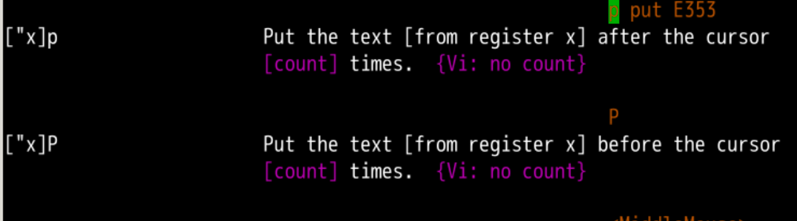
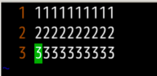
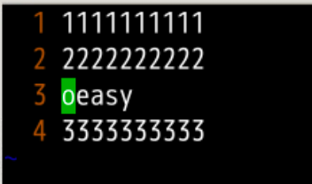
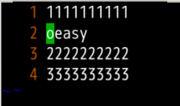
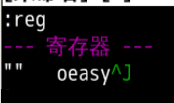
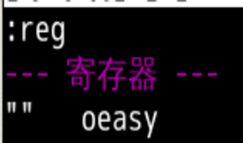
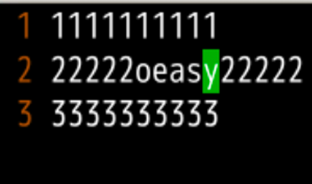
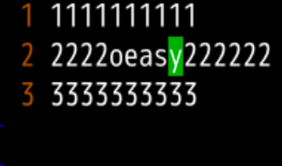
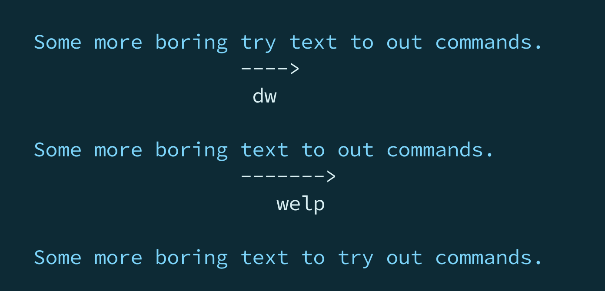
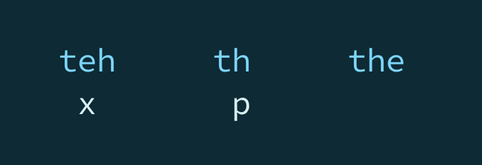

我们大幅度地复习了整个 motion：
直接运动
行运动
单词运动 wbe
word 的开头word 的开头word 的结尾word 之外还有 WORD行头行尾
行内跳跃和贴靠
前 跳跃是f后 跳跃是F前 贴靠是t后 贴靠是T全文查找
文本区块
这些 motion 都可以 d配合使用，完成快速删除的工作
[count] 进行翻倍"" 寄存器中一些原来的操作可以有了新的写法
删除的内容，放在 "" 寄存器中
d 的位置不远h d 找到剪切的帮助文件在 change.txt5.copying and moving text 中
pastep 对应的是 put 放上去d 到寄存器的东西放上去我们试一试
oeasy 然后对他进行 ddoeasy 这一行就进入了寄存器 "" 了oeasy9 行 oeasy但是这里面有两个 p
after cursorbefore cursor:ru1 行 9 个 111 行 9 个 228次1 行 3oeasy"" 默认寄存器里面了
2 行""中的oeasy会放到2222222...的下面
用u撤销刚才的操作
我们再试试 P，大写的这个
2行"" 中的 oeasy 会放到 2222222... 的 上 面
如果寄存器里面的不是一整行呢？🤔
我们先:reg看一下寄存器""

oeasy还有个^J意思是包括换行符motion是$意味着到行尾oeasy放进了寄存器"":reg^J 换行这个消失了！
222222...第5个2
5个2 后面 插入寄存器内容5个2上5个2 前面 插入


:reg中的内容""寄存器中:reg删除的是一整行或者多行:reg删除的是不包括换行符